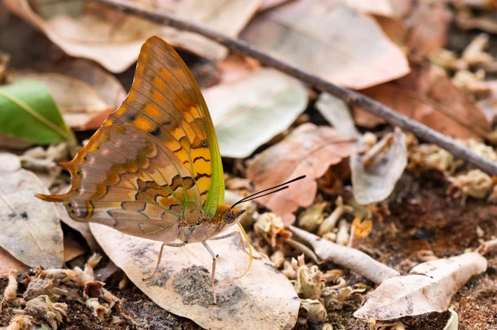
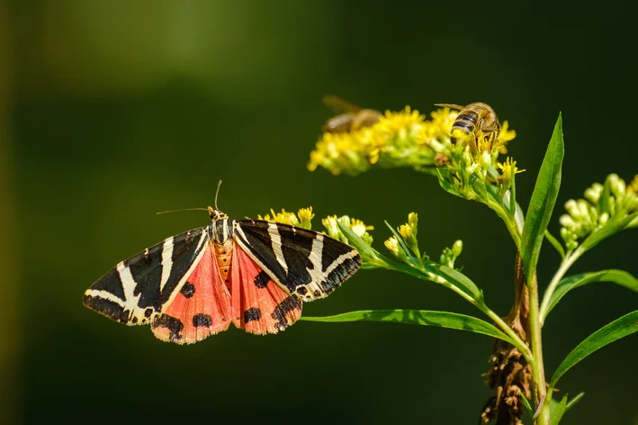
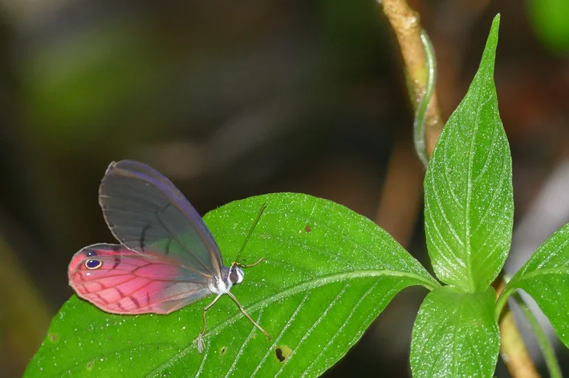

| Borboleta-azul-morpho (Morpho spp) |
|
aproximadamente 115 dias |
florestas tropicais da América Central e do Sul, incluindo a Amazónia e a Mata Atlântica |
Clique aqui para saber amis sobre
|
| Borboleta-coruja-das-neves (Boloria titânia) |
.webp) |
aproximadamente 90 dias |
América do Norte e nos Montes Urais, em climas frios |
Clique aqui para saber amis sobre
|
| Borboleta-quebra-nozes (Charaxes candiope) |
 |
Cerca de 06 meses |
África Subsaariana |
Clique aqui para saber amis sobre
|
| Calimórfa-de-quatro-pintas (Euplagia quadripunctaria) |
 |
Cerca 95 dias |
África Subsaariana |
Clique aqui para saber amis sobre
|
| Borboleta-harmonia (Cithaerias pireta) |
 |
Cerca 6 meses |
vive em florestas tropicais da América Central e do Sul, incluindo países como México, Colômbia, Equador, Peru, Bolívia e o Brasil amazônico. |
Clique aqui para saber amis sobre
|